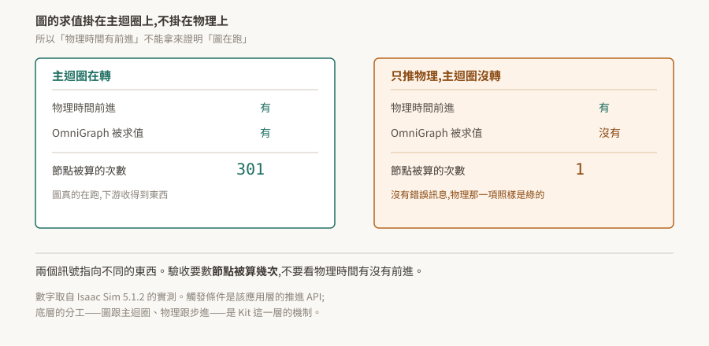

05 · OmniGraph:圖是 USD 資料,而求值不在物理迴圈上
OmniGraph 是 Kit 的視覺化節點圖:拉節點、連線,不寫程式碼也能讓場景動起來。
這一層有兩件事值得先知道,而且兩件都不是從介面上看得出來的。第一,那張圖本身就是 USD 資料——節點型別是一個屬性,連線是 USD 的 attribute connection,所以圖可以完全離線寫出來。第二,圖什麼時候被算,跟物理什麼時候前進,是兩回事。

驗證狀態:§2、§3 引用官方 OmniGraph 文件逐字。本 repo 沒有 Kit 環境,未實機驗證;§4、§5 的數字與 log 來自姊妹 repo 在 Isaac Sim 5.1.2 上的實測,已標明來源與觸發條件。§6 是待驗清單。
1. 根本問題:這張圖要存在哪
視覺化腳本工具的老問題是「圖存哪」。存成自訂格式就要自己寫序列化、版本遷移、diff 工具,而且它跟場景是兩個檔案,搬家時容易走散。
OmniGraph 的做法是不另外發明格式:圖就存在 USD 場景裡,用 USD 既有的機制表達。節點是 prim,節點型別是 prim 上的一個屬性,連線是 USD 本來就有的 attribute connection。
代價是 USD 的表達方式不像專用格式那麼直覺;好處相當大——版本控制、引用、layer 疊加、非破壞性編輯,全部免費繼承。
2. 節點型別與連線都是 USD 屬性
一個節點在 USD 裡帶兩個 token:
token node:type = "omni.graph.nodes.Times2"
int node:typeVersion = 1
官方對這兩個值的說明:
"The value of
node:typeVersionmust match the 'version' value specified in the .ogn file""The value of
node:typeis an extended version of the name key specified in the .ogn file, with the extension prepended."
型別名前面掛的是提供它的 extension 名。所以節點型別存不存在,取決於對應的 extension 有沒有真的活著——這把 02 §7 那條直接接了起來:extension 啟用回傳成功而它隨即收掉的話,這裡就會變成「節點型別不存在」。
連線用 USD 原生的寫法:
custom double inputs:a.connect = </Graph/times_2_node_1.outputs:two_a>
官方明說這不是比喻:
"OmniGraph connections between attributes are implemented and handled directly within OmniGraph they are published within USD as UsdAttribute connections."
推得的一件事:既然節點型別與連線都只是 USD 屬性,那麼整張圖可以用純 USD API 離線寫出來,不需要開 OmniGraph 的介面、也不需要在 Kit 執行期組裝。這對「場景由程式生成」「圖要進版控 diff」這類需求很有用。這是從上述機制推的,本 repo 未實測;驗法在 §6。
3. 結構在 USD,值在 Fabric
這裡有個容易混淆的分工,官方講得很直接:
"Although the attributes are represented in USD, the actual values OmniGraph nodes use are stored in Fabric. These are the values that need to be synchronized by OmniGraph."
屬性的宣告在 USD,節點實際使用的值在 Fabric,而同步是 OmniGraph 的責任。
接著 04 讀:那一篇說「寫進 Fabric 的值不會自動推回 USD stage」,這裡說 OmniGraph 需要同步那些值。兩者不衝突,差別在「自動」二字——Fabric 本身不會回寫,是 OmniGraph 這個系統主動去做同步。
官方架構文件描述的典型資料流是 USD 填充節點資料到 Fabric、Fabric 供計算、OmniGraph 把結果寫回 Fabric、Fabric 再把算完的資料同步回 USD。最後那一段(Fabric → USD)本 repo 只取到摘要,沒有取到逐字原文,列為待查證;前面幾段與 §2 引的那句逐字一致。
實務上的意思:在 USD 上讀一個 OmniGraph 節點的屬性值,讀到的不一定是它這一幀實際用的值。要確定的話,查 Fabric 那一份(04 §5)。
4. 圖跟著誰求值
這是本篇最貴的一條。
圖的求值掛在應用主迴圈上,物理前進掛在物理步進上,兩者不是同一個東西。 只推進物理而主迴圈沒有轉的時候,物理時間照樣前進,而圖完全不被求值——沒有錯誤訊息,物理那一項的檢查照樣通過。
姊妹 repo 在 Isaac Sim 5.1.2 上的實測,用該應用層 API 只推物理(render=False)與正常跑各一輪:
| 只推物理 | 正常跑 | |
|---|---|---|
OnTick 被算的次數 |
1 | 301 |
同一份紀錄裡還有一個不同觸發條件、同樣形狀的案例:headless 模式下 OmniGraph 不 tick。
這兩個觸發條件都來自應用層(Isaac Sim 的推進 API、該應用的 headless 組態),但底層的分工是 Kit 的。 換一個 Kit 應用,只要它也有「推進物理但不轉主迴圈」的路徑,同樣的事情就會發生。寫自己的 .kit 應用時,這條要自己驗一次(§6)。
由此得到一條驗收紀律:
不要拿「物理時間有前進」當成「模擬在跑」。 兩個訊號指向不同的東西。
5. 生效證明:兩個查詢
要證明圖真的在運作,查兩件事,而兩件都不能看回傳值。
一、節點型別註冊了沒。 這決定圖能不能被建起來。
registered = set(og.get_registered_nodes()) # 回的是字串
alive = "omni.graph.action.OnPlaybackTick" in registered
⚠ 這是列舉查詢,一定要配正對照。 og.get_registered_nodes() 回的是字串;若誤照物件屬性寫成 {n.get_node_type_name() for n in ...} 會拋 AttributeError,集合停在空的,於是每個型別都印「沒有」——包括一定存在的那個。拿一個確定存在的型別當試紙,它若也回「沒有」,壞的是查法。
二、節點被算了幾次。 這決定圖有沒有在跑。數某個 tick 節點的計算次數,跨若干幀比對它有沒有增加。§4 那張表就是這個做法的產物:數字是 1 或 301,結論完全不同,而兩種情況都沒有錯誤訊息。
這與 02 §7、03 §7、04 §5 是同一件事的第四種穿法:Kit 這一層的東西壞掉時,多半不是拋例外,是安靜地回一個合法的值。 每一層的驗收都要找到一個「能力在不在」的訊號,不能只看呼叫有沒有成功。
6. 待驗清單
| # | 待驗的斷言 | 怎麼驗 | 什麼算通過 |
|---|---|---|---|
| 1 | 圖可以用純 USD API 離線寫全(§2) | 不開 Kit,用 pxr 寫一個帶 node:type、node:typeVersion 與 .connect 的 USD 檔,再用 Kit 開起來 |
圖出現在編輯器裡且能被求值 |
| 2 | 節點型別名前綴就是提供它的 extension(§2) | 停用某個提供節點的 extension,再查 og.get_registered_nodes() |
該前綴的型別全部消失,其餘不受影響 |
| 3 | 純 Kit 應用上也有「物理前進而圖不 tick」的路徑(§4) | 在自製 .kit 應用上找出只推進物理的呼叫,數節點計算次數 |
物理時間增加而計算次數不變 |
| 4 | headless 下圖是否 tick(§4) | 同一份圖,GUI 與 headless 各跑一次,數計算次數 | 兩者次數接近則 headless 不是條件 |
| 5 | Fabric 算完的值會同步回 USD(§3,待查證) | 讓圖算出一個輸出值,分別從 usdrt 與 pxr 讀該屬性 |
兩邊一致則同步存在;不一致則需明確呼叫 |
| 6 | USD 上讀到的節點屬性值不等於這一幀用的值(§3) | 圖運作中,同一個輸入屬性兩條路徑各讀一次 | 兩值不同 |
第 3 條最值得優先:它決定了 §4 那條紀律在純 Kit 環境下是不是同樣成立,而目前的證據全部來自 Isaac Sim。